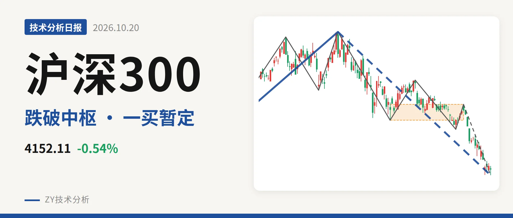
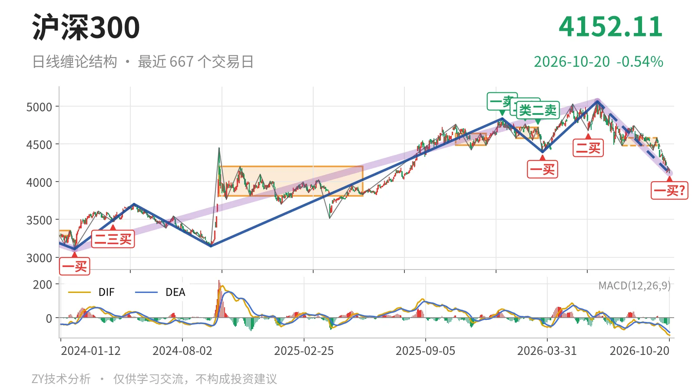
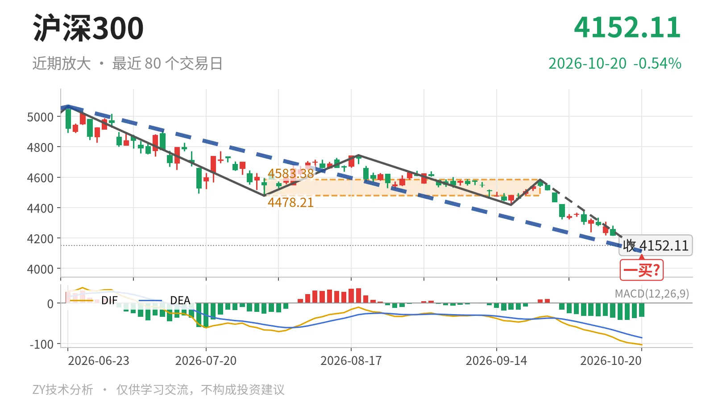

沪深300｜跌破4478中枢下沿，暂定一买4113

最近日线中枢 4478.21—4583.38点，收盘位于中枢之下
一句话：日线下跌段还在延续，收盘已破最近中枢下沿，一买仍属暂定。
📉 走势结构：更大级别仍属上涨，日线下跌段未结束
2021年2月18日至2024年2月2日的更大级别下跌走势已经结束，随后转入2024年2月2日至2026年6月23日的上涨走势，该上涨走势尚未走完。当前处于这轮上涨后的回落段，6月23日以来的日线下跌线段也还在延续，从5064.27点跌至4113.14点，跌幅约18.8%，内含5笔。3月24日至6月23日的日线上涨线段已经结束，价格未再刷新5064.27点高点，10月20日仍处在下跌线段中。

🧭 中枢与位置：跌破最近日线笔中枢下沿
最近一个日线笔中枢由7月30日至9月22日的笔构成，尚未完成，价格区间为4478.21—4583.38点，中轴4530.80点。10月20日收于4152.11点，低于下沿约7.3%，已经运行到中枢下方。该中枢中轴较2月3日至3月17日中枢的4649.53点下移，说明日线级别重心在下移，而不是中枢扩展的横向整理。
🔍 买卖点：10月20日一买暂定，尚未固定
1月13日一卖4836.95点、2月25日二卖4766.56点、3月17日类二卖4720.86点，一个比一个低；但3月24日至6月23日的上涨线段创出5064.27点新高，这三个卖点只对应较小级别回落。10月20日低点4113.14点对应暂定的一买，所在下跌笔9月22日至10月20日尚未走完，因此该一买会随这一笔延续而变化。此前3月24日一买4394.29点、6月8日二买4677.57点，在10月20日创新低后也只剩较小级别意义。线段级别上，最近一个二卖仍停留在2021年12月13日的5143.84点，本轮回落尚未生成新的线段级别一买。

⚖️ 背驰：面积缩小但DIF低点续创
同向下跌笔比较：6月23日至7月30日下跌笔绿柱面积650，DIF低点-66.5；9月22日至10月20日下跌笔绿柱面积388，DIF低点-103.0。价格低点从4478点下移到4113点，绿柱面积没有同步放大，但DIF低点继续下移，最新DIF仍在零轴之下。由于9月22日至10月20日下跌笔还在延续，绿柱面积还会变化，当前只能按已经出现的面积看，尚未形成完整的“新低不新弱”背驰。
📌 关键位置观察：能否回到4478点上方
10月20日暂定的一买位置在4113点附近，只有9月22日以来的下跌笔不再延续，该一买才会固定。后续若反抽回不到4478点上方，结构上构成三卖，向下离开最近中枢的动作会延续；若重新站上4478点，这次回落更可能只是中枢扩展，而非单边离开。下方更早的日线笔中枢下沿3812.32点可作为更远的结构参考。整体结构偏弱，弱在跌破最近中枢下沿、DIF低点续创、暂定一买尚未固定。
⚠️ 本文为基于公开行情数据的缠论技术结构记录，由程序自动计算并生成，仅供学习交流，不构成任何投资建议。市场有风险，投资需谨慎。